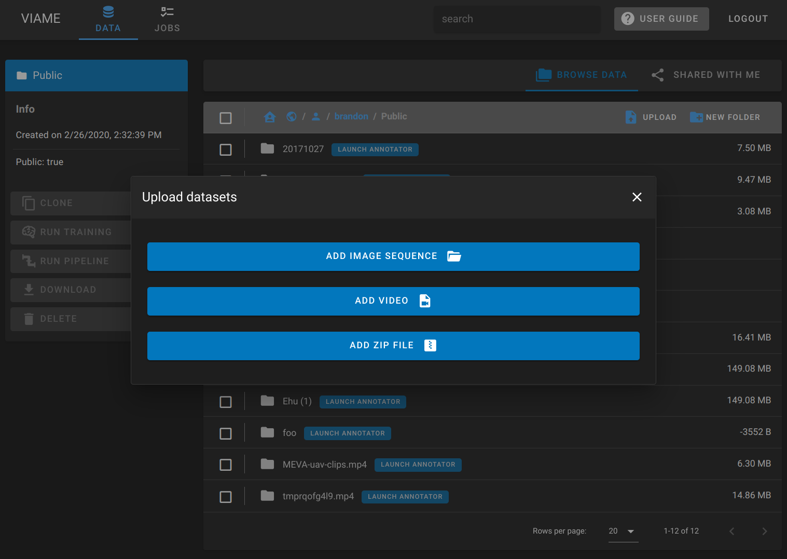
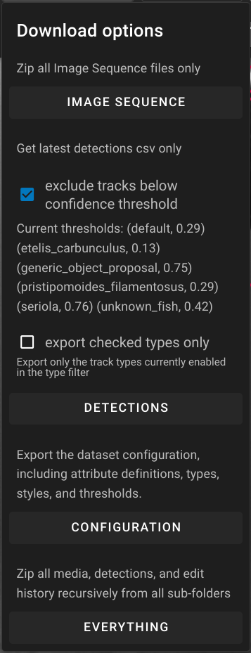
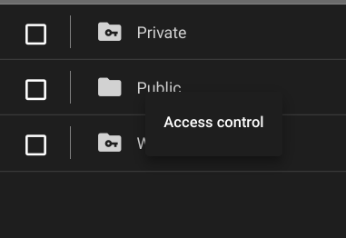
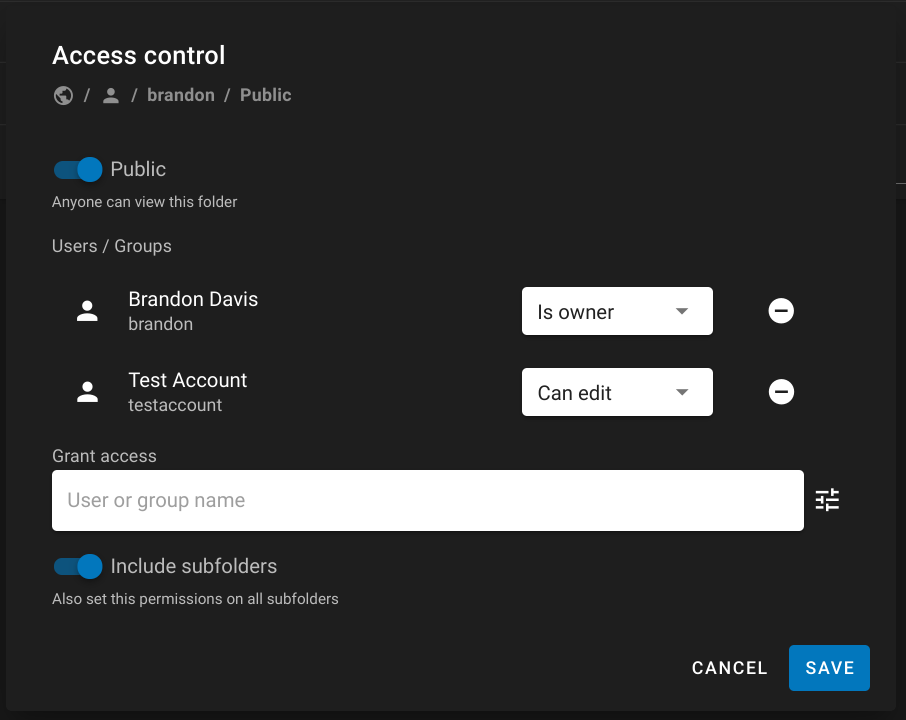
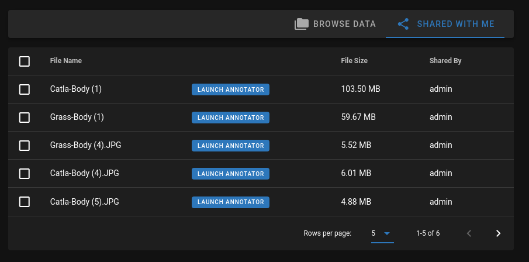
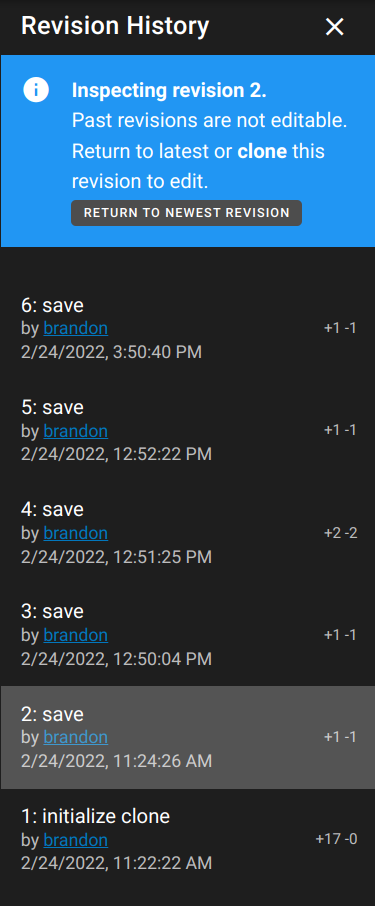

Web Version
Info
VIAME Web is automatically updated at 2AM EST/EDT every Thursday. If you are running a pipeline or training workflow during update, it will be interrupted and restarted.
Also note that pipelines and training jobs on our public server are limited to 3 days of execution time on 1 GPU. If you have a job that needs more time, please run it with the Desktop version, your own cloud environment like GCP, or contact us for support.
Use our public server Deploy your own
Register for an account
A user account is required to store data and run pipelines on viame.kitware.com.
- Visit viame.kitware.com
- Click Register
Uploading data

Uploading individual files
- Open the DIVE Homepage, and navigate to the Data tab.
- Click the User Home button at the top left of the data browser.
- Click either your Public or Private folder, or make a new folder and navigate into it.
- Click the Upload button that appears in the toolbar.
- Select a video or multi-select a group of image frames.
- Use Ctrl or Shift to click every file you want to upload.
- If you already have
annotations.csvor an annotation or configuration JSON select that too.
- Choose a name for the dataset and enter the optional playback frame rate or select other optional files.
- Press Start Upload
- In the data browser, a new Launch Annotator button will appear next to your data
- If you uploaded a video, it may need to transcode first
Info
All video uploaded to the web server will be transcoded as mp4/h264.
Uploading zip files
A zip import can have one of the following file combinations:
- One or more images, an optional annotation file, and an optional configuration file
- One video with an optional annotation file and an optional configuration file
- One or more folders which contain the above examples (These will be converted to separate datasets)
Zip import also accepts zip archive files that were generated by the Download Everything export button.
Download or export data

Data can be downloaded from the FileBrowser by clicking the checkmark to the left of a dataset name. This allows you to download the source images/video, the current detection file converted to .csv or everything including all backups of the detection files.
- Image Sequence or Video will export the source media as a
.zip - Detections will export a VIAME
.csvof annotations- Checkbox options are explained in the Navigation Bar Section.
- Configuration will export a DIVE configuration
.json - Everything will export all of the above.
Sharing data with teams
This information will be relevant to teams where several people need to work on the same data.
Concepts
By default, data uploaded to your personal user space follows these conventions.
- Data in the Public folder is readable by all registered users, but writable only by you by default.
- Data in the Private folder is only visible to you by default.
Working with teams
A common scenario is for a group to have a lot of shared data that several members should be able to view and annotate.
For most teams, we recommend keeping data consolidated under a single account then following the sharing instructions below to make sure all team members have appropriate access.
It's easiest to create a single parent folder to share and then put all individual datasets inside that parent.
Warning
You should note that 2 people cannot work on the same video at the same time. Your team should coordinate on who will work on each dataset.
Managing Permissions
DIVE uses Girder's Permissions Model.
There are four levels of permission a User can have on a resource.
- No permission (cannot view, edit, or delete a resource)
- READ permission (can view and download resources)
- WRITE permission (includes READ permission, can edit the properties of a resource)
- ADMIN also known as own permission, (includes READ and WRITE permission, can delete the resource and also control access on it)
Granting access to others
- Navigate to your data in the data browser.
-
Right click a dataset or a folder of datasets and choose Access Control

-
Search for and select users you want to grant access to.
-
Select the correct permissions in the drop-down next to each user.

-
If this is a folder of datasets, enable the Include Subfolders switch.
- Click Save. These users should now be able to view and edit your data.
Data Shared with you
You can view data shared with you by selecting the Shared With Me tab above the data browser.

Sharing URLs
You can copy and paste any URL from the address bar and share with collaborators. This includes folders in the data browser as well as direct links to the annotation editor.
Dataset Clones
A clone is a shallow copy of a dataset.
- It has its own annotations, and can be run through pipelines and shared with others.
- It references the media (images or video) of another dataset.
Warning
Be careful when deleting data that has been cloned. Clones "point to" their source dataset for loading media, so if the source is deleted, all of its clones will fail to load.
Clone use cases
- When you want to use or modify data that doesn't belong to you, such as data from the shared training collection or from other users.
- When you want to run several different pipelines in parallel on the same input data and compare the results.
Warning
Merging cloned data back to the source is not currently supported. To collaborate with others on annotations, the sharing use case above is preferred.
How to clone
- Open the dataset you wish to clone by clicking Launch Annotator.
- Click the Clone button in the top navigation bar on the right side.
- Choose a name and location for the clone within your own workspace.
Revision History

Revision history is accessible through the annotation UI in the Web version. Each time you press Save, a new revision of your annotation state is created. It is possible to inspect (or "check out") past revisions. The viewer will be in read-only mode when past revisions are checked out because only the most recent revision can be modified.
- Click History in the Navigation Bar area to open the Revision History panel.
- Each row shows the revision datetime, the action that caused it, and the number of additions and deletions.
- Click a row to check out a previous revision
- Click Download when a previous revision is checked out to download the annotation CSV from that revision.
- Click Clone when a previous revision is checked out to create a new clone of the dataset from that revision.
Info
Revision roll-back is not yet supported, but will be added in a future update. If you need to roll-back to a previous version of your anotation state
- check out the old version and create a CSV download, then re-upload the older version using import;
- or contact us for support.